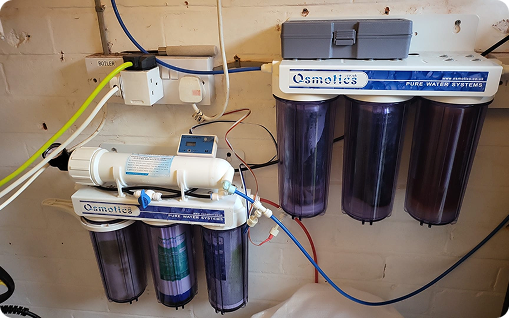

Marine & Tropical Services
Your hobby, my passion
Hi, my name is Ted Wardle, owner of Marine & Tropical Services. We specialize in water testing, tank cleaning, water changes, tank setups, water delivery and much more — ensuring your fish live in the best possible environment.

Our Services
Home Visits
We specialize in home visits, performing water testing, delivery, and full maintenance. Whether saltwater or freshwater, we provide all necessary water made in-house, affordably and professionally.
Healthy Tank
From water changes to tank cleaning, we keep your aquarium clean and your fish thriving. Our services are reliable, tailored, and ensure your aquatic environment remains perfectly balanced.
Tank Setup
New to aquariums? We’ll set up your tank from start to finish, ensuring everything is perfect so you can focus on enjoying your new aquatic world stress-free.
Water Testing
Ensure the health of your aquatic environment. We provide comprehensive water testing services to monitor essential parameters, ensuring your tanks remain balanced and your aquatic life thrives.
Water Changing
Regular water changes are vital to maintaining a healthy tank. Our water change services refresh your aquarium's environment, removing toxins and replenishing vital minerals for your aquatic life.
Water Delivery
Skip the hassle of transport with our reliable water delivery services that brings clean, aquarium-safe water straight to your door, ensuring your aquatic systems are always well-maintained.
Our Work


Our Filtered Water Process

Reverse osmosis (RO) is a highly effective water purification process that forces water through a semipermeable membrane using pressure, removing over 99% of contaminants, including bacteria, viruses, heavy metals, and microplastics. It turns tap water into purified, safe aquarium water by reversing natural osmosis, leaving behind dissolved solids.
Tank Cleaning Results
.gif)
.gif)
.gif)
.gif)
.gif)
.gif)